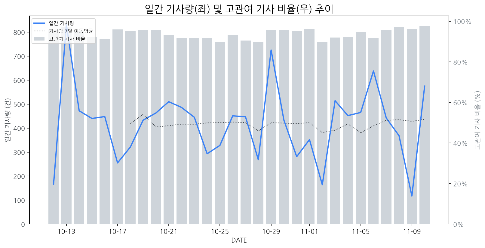

1
시장 활동 지표
기사량 추세 & 이상 징후 탐지
시장의 '전체 기사량'이 평소보다 비정상적으로 급증했는지(Spike)를 차트로 확인하고, LLM이 분석한 급등의 핵심 원인을 파악할 수 있음

고관여 기사란? 산업 연관 키워드로 수집된 기사들 중 디스플레이 키워드에 가중치를 반영하여 도출된 관련성 높은 기사
수집된 기사 수 (2026-11-10)
575
+12% WoW
기사량 변동 수준 (7일 이동평균 대비)
±6.7% 이하
2
오늘의 키워드
급격한 관심 ↑, 주목해야 할 키워드
1
올레드
+11.0σ
CES 2027 혁신상 수상 및 폴더블 시장 급성장 전망으로 올레드 기술력과 시장 확대 기대감 고조
Related Metrics
금일 언급량: 47, 전일 대비: +47
Interpretation
시장 지배력 강화 기대
Next Step
'올레드' 관련 상세 기사 및 경쟁사 반응 모니터링
2
tv
+10.1σ
LG 올레드 TV의 CES 최고 혁신상 5연패 및 신기술 발표가 주가 급등 요인입니다.
Related Metrics
금일 언급량: 66, 전일 대비: +64
Interpretation
기술 리더십 강화
Next Step
'tv' 관련 상세 기사 및 경쟁사 반응 모니터링
3
oled
+5.3σ
LG디스플레이의 OLED 회로 개선 및 원가 절감 소식과 특허 기술상 수상으로 관심이 집중되었습니다.
Related Metrics
금일 언급량: 53, 전일 대비: +44
Interpretation
원가 경쟁력 확보 및 기술 리더십 강화
Next Step
핵심 토픽 'OLED_Topic' 관련 신호입니다. 3번 섹션(키워드 감성분석)에서 해당 토픽의 감성 변동을 교차 확인하세요.
4
lg전자
+4.8σ
LG전자가 초슬림 디자인과 맞춤 출수 기능을 강화한 '퓨리케어 슬림정수기' 신모델을 출시하며 주목받고 있습니다.
Related Metrics
금일 언급량: 40, 전일 대비: +39
Interpretation
생활가전 경쟁력 강화
Next Step
'lg전자' 관련 상세 기사 및 경쟁사 반응 모니터링
3
실시간 Risk 키워드
경계해야 할 시그널 탐지
특정 토픽의 부정 감성 점수가 급등할 때 이를 즉시 탐지하고, "근거 기사" 링크를 통해 리스크의 실체를 빠르게 파악할 수 있음
!
Automotive_Display_Topic
하락폭: 0.02
- KF-21 사업 관련 한국산 패널 부재 이슈: KF-21 전투기 사업에서 한국산 디스플레이 패널 대신 일본 및 대만산 제품에 의존한다는 내용은, 국내 디스플레이 제조 기업의 첨단 산업 분야 경쟁력 및 기술력에 대한 부정적 인식을 강화하며, 향후 정부 주도 방산 사업 참여 기회 축소 가능성에 대한 우려를 증폭시킬 수 있습니다. 이는 곧 국내 디스플레이 제조 기업의 장기적인 성장 동력 약화로 이어질 수 있다는 분석입니다.
- 자율주행 및 고급 자동차 시장 경쟁 심화 우려: 화성의 자율주행 버스 도입, 카카오내비의 주행 화면 개편, 그리고 제네시스의 초대형 플래그십 전동화 SUV 출시 소식은 자동차 디스플레이 시장의 빠른 성장 가능성을 시사합니다. 그러나 이와 동시에, 해외 경쟁사들의 기술 발전 및 시장 선점 노력도 가속화될 수 있음을 의미합니다. 특히, 국내 디스플레이 제조 기업이 자동차 디스플레이 시장에서 차별화된 기술력과 안정적인 공급망을 확보하지 못할 경우, 경쟁 심화로 인한 수익성 악화 및 시장 점유율 하락의 리스크에 직면할 수 있습니다.
Current Status
오늘 점수: 0.46, 7일 평균: 0.48
Key Evidence Article (Most Negative)
4
주요 이벤트 모니터링
실시간 산업 동향 파악을 위한 주요 활동
최근 발생한 주요 기업들의 신제품 출시, 투자 등 주요 이벤트를 제공하여 매일 경쟁사 동향을 확인할 수 있음
AI 안경 출시가 활발해지면서 관련 디스플레이 기술에 대한 관심이 증대되고 있습니다. 미래 디스플레이 시장의 핵심 성장 동력으로 AI 안경이 부상하고 있습니다.
Impact
AI 안경의 소형화, 경량화, 고해상도, 저전력 디스플레이 수요 증가는 디스플레이 업계에 새로운 기술 개발 및 사업 기회를 창출할 것입니다.
Next Step
AI 안경에 최적화된 마이크로 디스플레이 기술(OLED, MicroLED 등) 연구 개발 및 생산 역량 강화에 집중해야 합니다.
국제유가가 급락하면서 항공 운항 비용이 절감될 것으로 예상되어 대한항공, 진에어 등 항공주가 급등세를 보이고 있습니다. 이는 유가 변동성이 항공 산업에 미치는 직접적인 영향을 보여줍니다.
Impact
국제유가 하락은 항공사의 운영 비용 절감으로 이어져 수익성 개선을 기대하게 만들지만, 이는 항공기 부품 및 디스플레이 수요에 직접적인 영향을 미치지는 않을 것으로 보입니다.
Next Step
디스플레이 제조 기업은 항공 산업의 단기적인 유가 변동보다는 장기적인 항공기 수요 및 기내 엔터테인먼트 시스템(IFE) 관련 디스플레이 기술 트렌드에 주목해야 합니다.
삼성전자는 'C랩 스타트업 데모데이'를 개최하여 30개 스타트업의 혁신적인 기술 및 사업 성과를 공유하는 자리를 마련했습니다. 이번 행사는 스타트업의 성장 지원과 기술 생태계 확장에 기여하는 것을 목표로 합니다.
Impact
이번 행사를 통해 소개된 혁신 기술들은 향후 디스플레이 산업 내 새로운 응용 분야를 개척하거나 기존 기술의 발전을 가속화할 잠재력을 가지고 있습니다.
Next Step
디스플레이 제조 기업은 C랩 스타트업에서 발굴된 차세대 기술 트렌드를 면밀히 분석하고, 협력 가능성을 타진하며 자체 기술 개발 전략에 반영해야 합니다.
에이수스가 새로운 디자인과 신규 컬러를 적용한 초경량 AI 노트북 '젠북 14'를 출시했습니다. 이 신제품은 휴대성과 AI 기능을 강화하여 시장 경쟁력을 높일 것으로 예상됩니다.
Impact
AI 노트북의 디자인 및 색상 다양화는 소비자들의 선택 폭을 넓히고, 이는 디스플레이 패널의 특수 마감 및 색 재현율 경쟁을 심화시킬 수 있습니다.
Next Step
경쟁사들의 신규 노트북 디자인 및 색상 트렌드를 분석하여, 이에 부합하는 디스플레이 소재 및 기술 개발에 대한 연구를 시작해야 합니다.
LG 올레드 TV가 CES에서 5년 연속 최고 혁신상을 수상하며 기술 리더십을 입증했다. 특히 게이밍 모니터 부문에서의 혁신이 주목받았다.
Impact
LG 올레드 TV의 지속적인 혁신상 수상은 프리미엄 TV 시장에서의 올레드 기술 우위를 공고히 하고, 관련 시장의 기술 개발 경쟁을 더욱 심화시킬 것으로 예상된다.
Next Step
타 디스플레이 제조 기업은 올레드 기술의 장점을 극대화하거나 차별화된 기술 개발을 통해 경쟁력을 확보해야 한다.